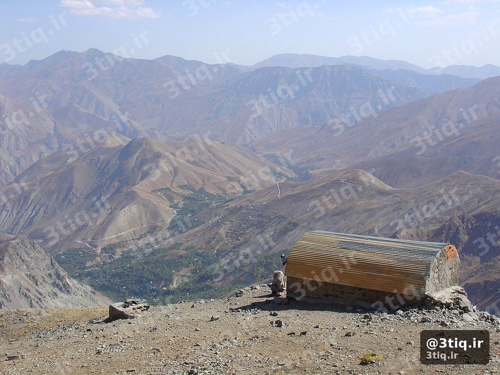
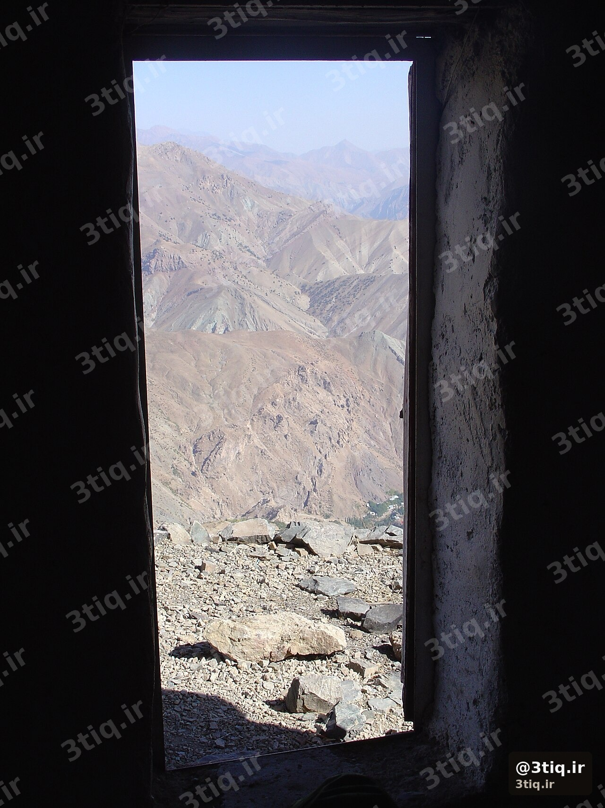

قله هزار با ارتفاع ۴۴۶۵ متر، پنجمین قله بلند ایران و یکی از شاخصترین مقاصد کوهنوردی استان کرمان است. درههای عمیق، یخچالهای طبیعی و مسیرهای سنگلاخ، این کوه را به گزینهای چالشبرانگیز برای تیمهای متوسط تا پیشرفته تبدیل کرده است.
این مطلب ادامه سری راهنمای صعود ۱۲ قله محبوب سه تیغ است. برای نقشه، گالری و جزئیات فنی بیشتر، صفحه اختصاصی هزار را هم ببین.

آشنایی با هزار
هزار در رشتهکوههای مرکزی ایران و استان کرمان قرار دارد. برخلاف بسیاری از قلههای البرز، دسترسی به این کوه نیاز به برنامهریزی لجستیکی دقیقتری دارد و معمولاً بهصورت دو روزه با شبمانی در کمپ انجام میشود.
نوع مسیر عمدتاً صخرهای / یخچالی است؛ یعنی در بخشهایی از فصل، بدون کرامپون و تبر یخ ورود خطرناک است.
مسیر صعود
مسیر اصلی (جنوب)
- طول: حدود ۱۶ کیلومتر
- اختلاف ارتفاع: حدود ۲۸۰۰ متر
- زمان روز صعود: ۱۰ تا ۱۲ ساعت
- سختی: سخت
- کمپ: کمپ هزار (حدود ۳۵۰۰ متر)
روز اول معمولاً تا کمپ هزار؛ روز دوم صبح زود حرکت به سمت قله و بازگشت. مسیر از درههای عمیق میگذرد و در بخشهایی نیاز به مسیریابی دقیق دارد.
کمپ و شبمانی

- کمپ هزار (≈۳۵۰۰m): کمپ چادری — پناهگاه ساختمانی نیست
- چادر مناسب باد، کیسه خواب سرد و پد عایق ضروری است
- آب و غذای دو روز را کامل همراه داشته باش
اگر اولین تجربه شبمانی در ارتفاع را داری، مقاله کمپ زدن در کوهستان را هم بخوان.
بهترین فصل
بهترین پنجره کلی: بهار (بهویژه اردیبهشت تا اوایل خرداد، بسته به برف سال).
- بهار: مناسبترین زمان؛ هنوز ممکن است یخچال فعال باشد
- تابستان: گرمتر در پاییندست، اما خطر کمآبی و گرمازدگی در روز بیشتر است
- پاییز و زمستان: فقط برای تیمهای مجهز و با تجربه برف
تجهیزات ضروری
- کرامپون و تبر یخ برای عبور از یخچال
- سیستم لباس لایهای — لباس سهلایه
- چادر بادگیر + کیسه خواب مناسب دمای زیر صفر
- آب و برنامه آبرسانی — آبرسانی در ارتفاع
- GPS / نقشه و قطبنما — مسیر پیچیده است
- چراغ قوه و باتری اضافه برای شروع صبح زود
نکات ایمنی
- عبور از یخچال بدون تجهیزات برف ممنوع است
- راهنمای محلی یا تیم آشنا به مسیر توصیه میشود
- علائم ارتفاعزدگی را بالای ۳۵۰۰ متر جدی بگیر
- منطقه زیستگاه عقاب طلایی است — فاصله ایمن و مدیریت زباله
- turnaround time مشخص داشته باش و تحت فشار گروهی ادامه نده
مشاهده صفحه هزار ←